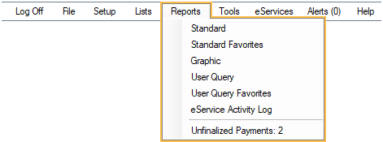
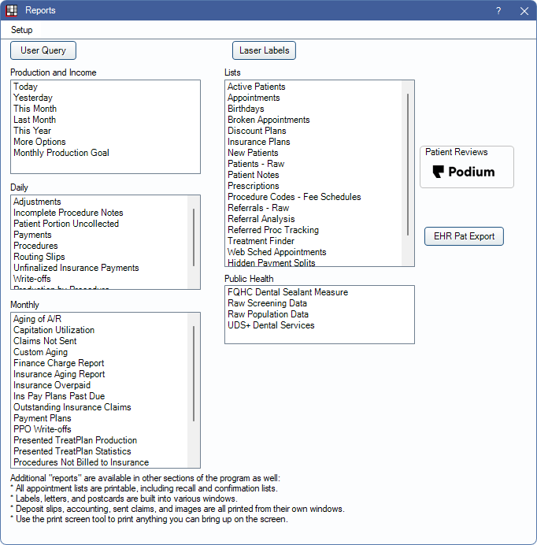
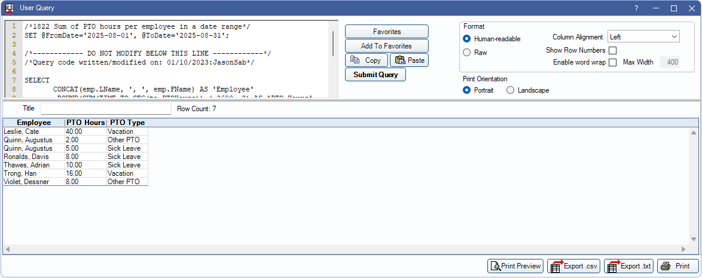

Reports
Open Dental has many report options accessed from the Main Menu to view data in organized formats.
Reports can easily be printed or exported after running.
Standard Reports
Open Dental has over 50 built-in reports to help you track and view data. Reports have customizable filters and settings. Some important filters are noted in the following report descriptions. Set report favorites to easily choose from a short list of your most commonly-used reports.
These reports include:
Production and Income Reports:
There are various reports for running production and income data.- Today: Quickly generate a report for today's date using default settings.
- Yesterday: Quickly generate a report for yesterday using default settings.
- This Month: Quickly generate a report the current month (1 - 31) using default settings.
- Last Month: Quickly generate a report for last month (1 - 31) using default settings.
- This Year: Quickly generate a report for the current year (Jan 1 - Dec 31) using default settings.
- More Options: Generate a report using customizable options, like detail, date range or provider.
- Monthly Production Goal Report: This report compares production goals with actual production.
- Provider Payroll Production and Income Report: This report can be used to determine a provider's net production and income.
Daily Reports:
These are common reports that are normally run each day. These reports can be run for a single day or a larger date range.- Daily Adjustments Report: This report shows detail for adjustments made in the date range. This can be filtered by adjustment type.
- Incomplete Procedure Notes Report: This report can be used to find incomplete chart notes.
- Net Production Detail Daily Report: This is a true daily report that lists net production by transaction in a specified date range.
- Patient Portion Uncollected Report: This report can be used to easily find completed treatment with an uncollected patient balance.
- Daily Payments Report: This report shows detail of payments in a date range. This can be filtered by provider and payment type.
- Daily Procedures Report: Lists all completed procedures within a date range. Includes fees and can be filtered by provider
- Routing Slips: Use this report to quickly print appointment routing slips for the day.
- Unfinalized Insurance Payment Report: Use this report to find claims that were received but payment wasn't finalized.
- Daily Write-off Report: Use this report to find write-offs, grouped by patient, for the date range.
Monthly Reports:
These are reports commonly run monthly and are usually part of a billing practices. Report dates can be adjusted.- Aging of A/R Report: Use this report to see all accounts receivable. This can be filtered by account age and billing type.
- Capitation Utilization Report: For practices using Capitation Insurance Plans, use this report to see all procedures performed for capitation patients in a date range.
- Claims Not Sent Report: Use this report to find claims that still need to be sent to insurance, including claims that are ready to send or may be waiting on a primary claim.
- Custom Aging Report: This report is similar to the Aging of A/R Report but allows for additional filtering and customization.
- Finance Charge Report: This report lists all Finance Charges applied on a selected date.
- Insurance Aging Report: This report is useful for viewing a breakdown of insurance and patient portion estimates by age of account.
- Insurance Overpaid Report: This report finds situations where the insurance payment, plus any write-off, exceeds the procedure fee. This is useful for determining if an insurance refund is necessary or a write-off should be adjusted.
- Insurance Payment Plans Past Due Report: Use this report to track insurance repayment agreements where there may be overdue payment.
- Outstanding Insurance Claims Report: Use this report to track outstanding insurance claims and preauthorizations that may need follow up. You can also assign users to follow up on specific claims or preauthorizations and add status information.
- Payment Plans Report: Use this report to view of list of patient repayment agreements, including balance details.
- PPO Writeoffs Report: Use this report to compare write-offs by claim or carrier.
- Presented Treatment Production Report: This report gives a breakdown of the production from presented treatment that has now been completed.
- Treatment Plan Presentation Statistics Report: Use this report to find metrics, by user, on presented treatment.
- Procedures Not Billed to Insurance Report: Use this report to find procedures that haven't yet been billed to insurance. Claims can quickly be created from the report.
- Procedures Overpaid Report: Use this report to find procedures that are overpaid due to patient or insurance payments, write-offs, or adjustments. This can be helpful to find if a refund may be needed.
- Receivables Breakdown Report: use this report to see changes in accounts receivable throughout a calendar month.
- Unearned Income Reports: There are several report to help find payments that may need to be allocated to procedures.
- Payment Plans Overcharged Report: Use this report to find and fix Payment Plans where production is overcharged.
Lists:
These are reports used to pull lists of various patient data.- Active Patients Report: Use this report to get a list of active patients with address and insurance information.
- Appointments Report: Generate a list of appointments scheduled for or created in a date range.
- Birthday Report and Postcards: Use this report to get a list of patients with birthdays in a specified date range and quickly generate postcards.
- Broken Appointments Report: Track appointments that were broken using this report. Includes broken appointment fees.
- Discount Plans Report: Use this report to get a list of patients with a specific discount plan.
- Insurance Plans Report: Use this report to get a list of patients with a specific insurance carrier.
- New Patients Report: Find patients who had their first procedure completed in a date range by running this report.
- Patients Report: Use this report to create highly customizable lists of patient information.
- Patient Notes Report: Use this report to search for keywords in certain patient note fields.
- Prescriptions Report: Easily get a list of patients with a specific prescription or a list of prescriptions attached to a specific patient.
- Procedure Codes - Fee Schedules Report: Use this report to easily print or export a fee schedule.
- Referral - Raw Report: Use this report to generate a highly customizable list of referral sources.
- Referral Analysis Report: This report analyzes the incoming referral count and production for a specific date range.
- Referred Procedure Tracking Report: Use this report to track and manage procedures that were referred out.
- Treatment Finder Report: Use this interactive report to identify patients who need to schedule planned treatment. The report includes filters for reamining insurance benefits and code range.
- Web Sched Appointments Report: Use this report to find patients who have scheduled appointments using the Web Sched Feature.
- Hidden Payment Splits Report: Use this report to track accounts with treatment planned prepayments. This can be helpful to make sure payment is allocated or to determine if a refund is needed for treatment not scheduled.
- ERAs Automatically Processed Report: Use this interactive report to see the history of Electronic Remittance Advice (ERA) that has been automatically processed or take action on ERAs that need to be manually processed.
- Insurance Pending Supplementals Report: Use this report to find all pending supplemental insurance overpayments and underpayments.
Public Health Reports:
These are reports used to pull Public Health data.- UDS Report: Use this report for FQHC Dental Sealant Measure data.
- Raw Screening Data Report: This report produces Public Health Screening data as a single table.
- Raw Population Data Report: this report produces a list of patients who had treatment during a specific date range.
Graphic Reports
Graphic reports are used to quickly compare and analyze trends and data. Report options and types are customizable.

These can be used to display the following:
- Production
- Income
- Accounts Receivable
- New Patients
- Broken Appointments
User Queries
The User Query feature can be used to compose or run SQL queries to retrieve information from the database that is not accessible using standard reports. Users can access our existing library of over 1400 Queries or submit custom Query Requests.
